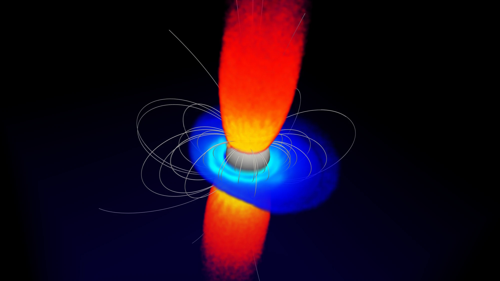

Research
I study the kinetic plasma physics of compact objects — the regime where the collective behavior of a relativistic plasma, rather than any fluid description of it, sets what the object does and what we see. Most of my work is done with first-principles particle-in-cell simulations, backed where possible by analytic theory.
Pulsar magnetospheres
A rotating, magnetized neutron star pulls charge off its surface and fills the space around it with plasma. In the closed zone — the region of field lines that return to the star — that plasma cannot escape, and it settles into a disk-dome equilibrium: a dense equatorial disk of one sign of charge, with domes of the opposite sign over each pole. This configuration is a textbook solution, but it is not stable.
Using 3D particle-in-cell simulations with Tristan-MP v2, I follow aligned and oblique magnetospheres from that equilibrium into the nonlinear state of the diocotron instability, the non-neutral plasma analogue of the Kelvin–Helmholtz instability, driven by the shear in the E × B rotation of the trapped charge. The instability saturates into a long-lived m = 1 mode that carries a few percent of the central point charge and survives for many rotation periods.
What makes this more than a curiosity is the transport it drives. I derived a quasilinear radial diffusion coefficient for the stochastic motion of charge across field lines in the saturated state, and built a multipole framework relating the diocotron charge moments to perturbations of the polar-cap potential and the emission beam. That chain connects a closed-zone instability to observables: nulling, periodic amplitude modulation, and drifting subpulses.

The animation below shows the evolution of the magnetosphere through the onset and saturation of the instability.
3D particle-in-cell simulation of an aligned pulsar magnetosphere.
Magnetic reconnection
Magnetic reconnection converts magnetic energy into plasma energy by rearranging the field's topology, and it does so far faster than any simple resistive estimate allows. Explaining how fast, from first principles rather than by fitting simulations, has been a long-standing problem. It matters wherever magnetic energy is released suddenly — solar flares, magnetar bursts, pulsar wind termination, and black hole coronae.
With Yi-Hsin Liu at Dartmouth, I developed the first analytic theory of the reconnection rate in the relativistic, magnetically dominated pair plasmas relevant to compact objects, showing how the geometry of the diffusion region itself sets the rate, and validating the prediction against large-scale particle-in-cell simulations. Earlier, I derived the relation between the energy conversion rate and the reconnection rate in Petschek-type reconnection, which gives a way to connect a measured flare energy budget to the underlying reconnection geometry.
Reconnection remains a thread through my current work: it is the mechanism that dissipates the current sheet beyond the light cylinder, and the same questions about rate and energy partition reappear there.
assets/img/reconnection-1.png
assets/img/reconnection-2.png